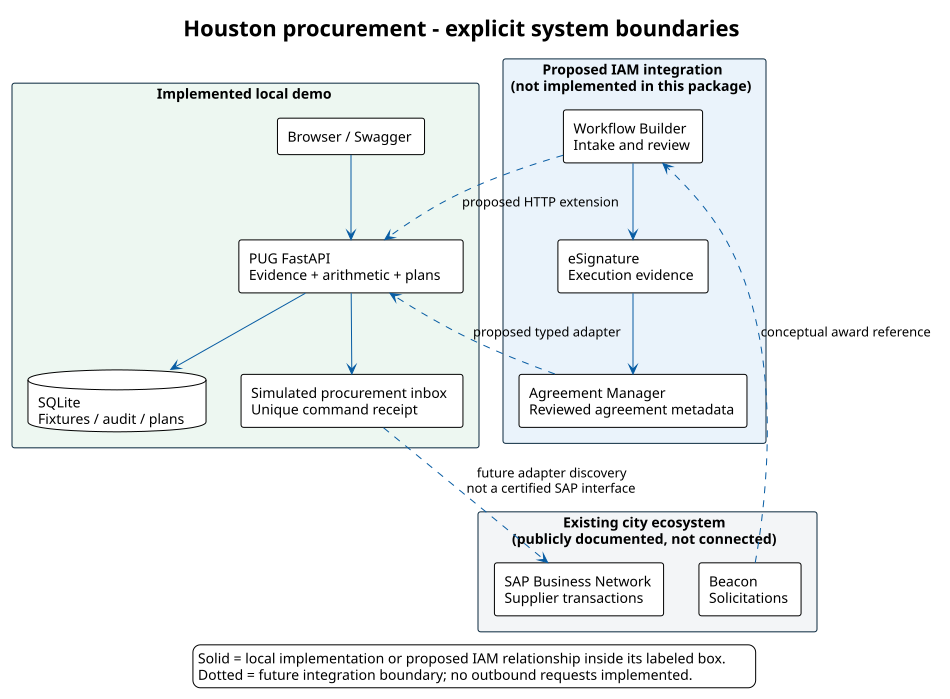
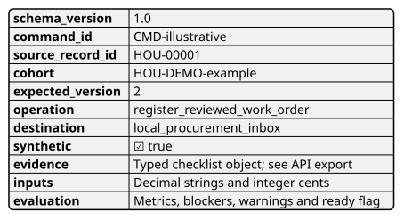
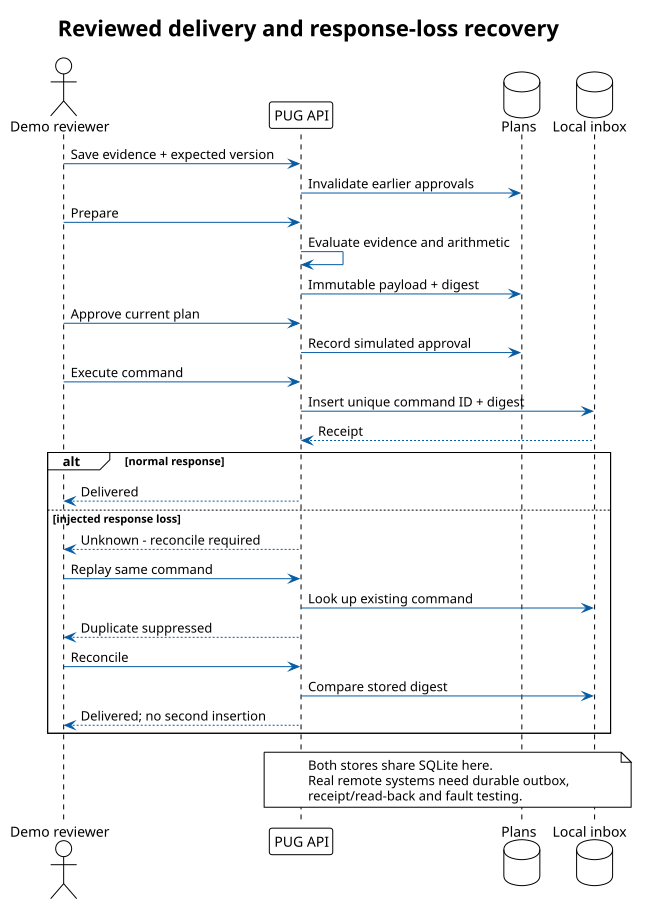

Executive recommendation
Demonstrate a procurement officer resolving one consequential exception, not merely watching an agreement get signed. A fictional facilities work order arrives with an index-driven price variance. The officer sees the source inputs, corrects the discrepancy, records supporting evidence, reviews a frozen command and hands the packet to a simulated downstream inbox. A deliberately lost response then proves that the system can reconcile an uncertain outcome without creating another transaction.
This story makes the IAM proposition tangible: agreement information becomes an accountable decision, with a traceable handoff. It also creates a useful division of labor. docusign would handle agreement intake, execution and agreement information; PUG would supply explicit calculations, validation and integration controls; the purchasing or finance platform would remain authoritative for its transactions. The current package implements the PUG-side local demonstration only.
Houston’s announced ecosystem identifies Beacon for solicitation activity and SAP Business Network for supplier transactions. The design therefore does not inherit an Oracle assumption from the earlier Getty example. No public evidence gathered here establishes Houston’s internal SAP release, integration middleware, destination API contract or granted access. These must be discovered with the system owner.[S2]
The recommended demonstration has four chapters: price assurance, invoice evidence, emergency justification and renewal readiness. They share a reusable state machine and canonical command. Each provides an observable success condition and a negative test. The UI is Houston-inspired through an original skyline, civic navy, blue and gold; it intentionally avoids the official city seal and authentic-looking official approvals.
What the audience should leave believing
A completed agreement can carry structured, reviewed evidence into an operational process.
A modest Python service can add deterministic mathematics and integration safeguards to an agreement workflow.
Human authority remains explicit: a price calculation does not approve a contract, and a complete invoice packet does not release payment.
A useful proof of concept can be reproducible on another laptop without city credentials, paid provider traffic or a production deployment.
Research method and evidence boundaries
Research prioritized Houston’s own procurement pages, published administrative policies and audit reports, followed by docusign documentation. Each entry in the source register records a source class, date, finding and design implication. The same register is visible in the application. The evidence is a public-document review, not an interview-based discovery assessment.
The General Services audit reports no detailed audit findings. Its observations include City Cost Index inconsistencies, missing invoice support and opportunities to strengthen administration. The principal scope is FY2021 through September 2023, with limited later testing. The report’s process appendices provide useful context for work-order review and delivery. These historical observations motivate scenarios; they do not prove that today’s staff or systems still have the same conditions.[S1]
A published 2021 HCD contract package contains docusign envelope identifiers. That supports a historical eSignature observation, not a claim about current IAM licenses, agreement repositories or citywide adoption.[S12]
Evidence that must not become an automatic rule
The policy collection includes documents dated 2022 and 2023. A page remaining online does not establish that every threshold, exception or implementing practice is current. The example consequently contains no executable monetary procurement threshold. A production policy pack must be signed off by the responsible procurement and legal owners, with effective dates and version history.[S3][S5]
OBO-related applicability is especially unsuitable for improvisation. A July 2026 news report describes litigation affecting race-based program provisions, but the current court order, any stay and the city’s implementation instructions were not verified here. No affected preference, numeric participation goal or certification decision is modeled. The local checklist represents only a reviewer recording that applicable requirements have been considered.[S7][S8]
No supplier personal details, signature images, employee benefits records, actual invoice files or proprietary unit-price-book content were copied into the demo. All displayed commercial values and names are synthetic. The source register links to public documents instead of republishing them.
Stakeholders, systems and authority
| Role / boundary | Proposed responsibility | Must remain outside automated discretion |
|---|---|---|
| Department requester | Provide scope, incident facts or service need | Self-approval of procurement authority |
| Project manager | Check commercial basis and acceptance evidence | Treating extracted text as verified pricing |
| Contract administrator | Assemble packet, track versions and obligations | Certifying completeness without source evidence |
| SPD / CPO | Determine procurement path and authorized review | Emergency qualification by a software score |
| Finance / receiving | Validate payable and receipt prerequisites | Payment release by this demonstration |
| OBO / legal owner | Determine current applicability and approved exceptions | Inferring eligibility or legal rules from stale pages |
| Integration operator | Monitor delivery, retries and reconciliation | Retrying an uncertain write blindly |
These are proposed demonstration personas aligned to the process narrative, not a verified city organization chart or authorization matrix. All local personas are operated by the same user. Production segregation of duties must be enforced by identity and policy, not by changing a label in the UI.
Published Pay or Play materials distinguish acknowledgement, elections, subcontractor and waiver records, with reporting through the Workforce Utilization Module. A future integration should reference that process instead of cloning sensitive employee information into IAM indiscriminately.[S6]
Scenario one: facilities work-order price assurance
Business story
A fictional General Services project manager receives a cooling-repair work-order proposal from Bayou Demo Services. The scope references a catalog-based estimate. A candidate value has been extracted or entered, but the proposed index does not match the reviewed basis. The procurement analyst needs to see both the difference and why it exists before assembling the approval packet.
The local fixture uses an invented base price of $120,000, a coefficient of 1.04 and an approved illustrative index of 1.08. The submitted index is 1.13. These values and their multiplicative relationship are an instructional calculation, not a verified Houston contract formula or an authentic catalog.
Walkthrough and evidence
The analyst opens the record and sees a blocked preparation action. The reviewer checks the catalog/index basis, funding review and conflict-disclosure review. Correcting the index to 1.08 removes the arithmetic blocker after the change is saved. The service produces a frozen packet with its record version, reviewed inputs and decision warnings. Approval then permits one local delivery.
In a real implementation, the candidate values would include document ID, page or anchor, extraction run, confidence where available, effective index quarter and reviewer identity. The software would compare an approved pricing schedule to the proposal line items. A contract-specific rounding policy would define whether rounding occurs per line, subtotal or final amount. This fixture rounds the final result to the nearest cent using decimal half-up arithmetic; that is a declared demo convention.
What this proves and what it does not
The example proves repeatable arithmetic, evidence gating and invalidation of stale approvals. It does not prove AI extraction accuracy, authorized access to a price book, contract interpretation or actual savings. The $6,240 is a synthetic discrepancy, never a realized savings claim.
The local operation register_reviewed_work_order records a review packet in an inbox. Its name does not confer purchase-order or work-order issuance authority. An actual destination mapping would need an approved business object and API contract.
Scenario two: invoice evidence and service acceptance
A fictional roof-maintenance payment application seeks $48,000 against a $120,000 contract. The accepted cumulative value is $84,000 and prior paid value is $36,000. The outstanding accepted amount is therefore $48,000. A request of $48,000.01 must fail the amount gate.
The reviewer must record references to the signed work order, service acceptance, invoice support and applicable compliance review. A real evidence model should distinguish a document’s existence, validity, period and reviewer decision. A checked box here is a simulated attestation; the application does not inspect uploaded PDFs or authenticate a city employee.
A future acceptance mapping should preserve invoice identifier, supplier identifier, contract reference, accepted quantities, unit of measure, tax treatment, retention, prior-payment reconciliation and the destination’s duplicate-invoice key. This minimal example excludes tax, retainage, partial reversals and credit notes so that the demonstrated arithmetic remains inspectable. Those exclusions are extension requirements, not assumptions that the city never uses them.
The handoff is register_invoice_review_packet. Finance remains responsible for payable posting and payment release. Duplicate command protection is demonstrated at the transport layer; real duplicate-invoice protection also requires the destination’s business key. Two distinct commands carrying the same real invoice would need additional business-level detection.
Scenario three: emergency justification and escalation
A fictional stormwater pump incident requires an urgent $185,000 estimated response. The demonstration clock begins at a synthetic incident, not at the current wall clock. The reviewer records elapsed hours, the actual contact hour and the actual completed-form hour. AP 5-11 provides the public basis for the eight- and 24-hour intervals shown.[S3]
An absent contact at hour 26 appears overdue. Recording contact at hour 9 marks it late; it does not rewrite history as timely. A completed form at hour 25 is likewise late. The evidence includes incident facts, the cost ceiling, a simulated CPO determination and review of the council approval path. A future timestamp cannot satisfy the gate.
Lateness is retained as a warning while a completed packet can still be sent for review. Preventing submission forever after a missed deadline would discourage transparent remediation. This is a deliberate design choice: the application facilitates escalation and records the discrepancy, while the authorized officer decides the operational and legal response.
The packet must never auto-issue an EPO or infer that a public emergency exists. Production discovery must establish the incident-time definition, time zone, stabilization context, contact evidence, escalation channel, alternate personnel and applicable approval authority. The numeric estimate is a fixture; it does not select a legal threshold or procurement method.
A useful future Workflow Builder notification would include the record reference, department, incident time, deadline, elapsed time, cost ceiling, missing evidence and a secure task link. Send only necessary information. The current package previews state in the browser and sends no email, invitation, SMS or Telegram notification.
Scenario four: renewal and performance readiness
A fictional facility-inspection agreement ends on January 15, 2027. The contract’s invented 90-calendar-day notice term yields October 17, 2026. The fixed demo date is October 7, 2026, leaving ten days. The 90-day interval is not represented as a citywide requirement.
The contract manager verifies the extracted clause, performance review, budget review and competition/renewal authority. AP 5-13 is a basis for including performance evidence within its applicability; it is not a basis for inventing renewal rights.[S4]
A real agreement record should distinguish end date, renewal option, automatic renewal, notice recipient, delivery method, business-day conventions and the clause that supports each value. An AI-generated date should remain proposed until a reviewer confirms the actual contract text. The demo operation creates a renewal review task, not an executed renewal or a notice to a supplier.
Negative tests include an overdue notice date, a missing performance evaluation and an altered interval after approval. Changing saved evidence increments the record version and marks prepared or approved commands stale. The user must prepare and review a new command against the updated record.
IAM demonstration design
| Capability | Proposed live sandbox demonstration | Current local implementation |
|---|---|---|
| Workflow Builder | Structured intake and HTTP extension calling a narrowly scoped decision service | Form controls call local FastAPI endpoints |
| eSignature | Execute approved synthetic work-order documentation; capture completion event | Simulated signed-reference checklist only |
| Agreement Manager | Ingest synthetic agreement; inspect fields, terms and source evidence | Typed fixtures and inspectable JSON, no extraction engine |
| PUG decision service | Deterministic math, candidate validation, review task and controlled handoff | Implemented with FastAPI and SQLite |
| Procurement destination | Owner-approved SAP interface, receipt and read-back | Local inbox with unique command ID and digest |
Vendor release notes describe Workflow Builder and its HTTP web request capability; actual entitlement and available configuration must be checked in the selected sandbox.[S9] Agreement Manager’s API documentation supports a future ingestion/query story, but this package neither exercises those endpoints nor verifies a tenant license.[S10]
Custom field configuration should be versioned and trialed on a dedicated synthetic corpus. Configuration changes can affect existing mappings and processing. Review a dry run and establish rollback/reprocessing expectations before applying a package to a shared tenant.[S11]
Proposed Workflow Builder request contract
The enterprise extension should accept a small business payload: tenant-scoped agreement reference, scenario, source event ID, verified commercial inputs, evidence references and an expected record version. It should return a stable decision code, calculated metrics, blockers, warnings and a correlation ID. A timeout is an unknown outcome until reconciled; it is not evidence that the destination rejected the transaction.
The local browser API is a demonstration interface, not that production contract. In particular, its process token is not a Workflow Builder service credential. A real endpoint needs supported server-to-server authentication, authorization, bounded request size, rate limits and an audited identity. Connect events require signature verification over the correct raw request bytes before persistence or state transition, plus replay/deduplication controls. Actual validation must use the provider’s current documentation and a test tenant.
Architecture and canonical data

Canonical envelope and field provenance
The implemented envelope carries schema version, command ID, source record ID, cohort, expected version, operation, destination, evidence, inputs and evaluation. Monetary values use integer cents; decimal multipliers remain strings. The serialized payload is stored with a SHA-256 digest. The cohort is a cleanup ownership label, not a security tenant boundary.
An enterprise extension should add tenant ID, agreement/envelope IDs, source event ID, source-document hashes, field-level provenance, policy version, authenticated reviewer IDs, approval timestamps, destination business keys and retention labels. Avoid overloading a display name as a supplier identifier. Map fund, department and cost center to owner-approved reference data instead of guessing IDs from public PDFs.
The JSON diagram below is an illustrative flattened overview. The real local export contains typed nested evidence, inputs and evaluation objects. The source files can be edited and regenerated with PlantUML; the application ships pre-rendered SVG so its runtime requires no Java.

State, delivery and failure semantics
A record starts in review. Every saved evidence update increments its version. Preparation is refused until the evaluator has no blockers. Preparation freezes the payload and records the source version. Approval is allowed only for that current prepared version. Evidence changes invalidate prior prepared and approved plans.
Execution inserts one inbox entry keyed by command ID. Replaying that same ID returns a duplicate-suppressed result. The response-loss switch stores the entry but leaves the plan outcome unknown. Reconciliation looks up the existing receipt and checks its digest before marking delivery complete. It never inserts a second entry to resolve uncertainty.
All these tables share one SQLite transaction boundary. This is intentionally simpler than a remote system. It demonstrates the semantics but does not establish distributed exactly-once delivery. A real integration needs an outbox committed with the source decision, a durable worker, bounded exponential retry with jitter, a dead-letter or intervention path, destination idempotency where supported, and a queryable receipt or business-key reconciliation procedure.

Operational failure matrix
| Condition | Demonstrated behavior | Production requirement |
|---|---|---|
| Missing evidence / variance | Refuse preparation with specific blockers | Persist evidence provenance and reviewer decision |
| Concurrent evidence edit | Version conflict or stale approval | Enforce destination concurrency if relevant |
| Execution before approval | Reject request | Authenticated approval policy and separation of duties |
| Duplicate delivery | Same command ID suppressed | Business-key and provider idempotency rules |
| Response lost after accept | Unknown state, receipt reconciliation | Durable remote status query; no blind rewrite |
| Invalid payload / digest | Reject or stop reconciliation | Alert operator, preserve evidence and correlation |
| Late emergency packet | Preserve late warning and actual times | Human escalation; no backdating |
| Reset requested | Typed cohort and manifest required | Retention and ownership policy; no tenant-wide wipe |
Security and data-handling design
Implemented local controls
The supplied launcher binds to loopback only. The app rejects unexpected hosts and foreign-origin API requests. A random per-process token is required by API operations and supplied to the local page. The main UI uses same-origin assets and a restrictive content security policy. Swagger loads its standard externally hosted UI assets and has a separate CSP; provider data is still not sent by this demo. For a fully offline environment, vendor those Swagger assets or disable the docs UI.
Inputs are explicitly modeled and scenario-scoped. Arbitrary extra fields are rejected. SQL values are parameterized; dynamic table identifiers are internal constants. The package provides no arbitrary URL runner, external connector or provider credential input. The browser’s checkboxes do not bypass the server’s evaluation, version and state checks.
These controls are suitable to the local demonstration boundary. They are not proof of production hardening. Anyone with access to the local session can operate all demo personas. A local administrator can modify the SQLite file, so its audit records are not tamper-evident. Binding the app to a network interface would invalidate the intended security model.
Required controls before an enterprise pilot
Corporate identity with MFA and role-based, tenant-scoped authorization. Enforce reviewer independence on the server.
Separate read, prepare, approve, execute and reset permissions. Default to read-only and deny unlisted operations.
Dedicated synthetic sandbox account, least-privilege OAuth scopes, secure token storage and explicit production isolation.
Signed webhook verification, event deduplication, event-to-tenant binding and resource-ownership validation.
Document malware scanning, size/type restrictions, encrypted storage, retention schedules and records-request handling.
Structured audit events to a protected destination, redacted telemetry and alerts for unauthorized attempts, retry storms and unresolved unknown outcomes.
Approved destination adapter with request/response contracts, concurrency controls and a kill switch that stops new writes while allowing reconciliation reads.
No attachment upload is included in version one. That avoids falsely presenting a basic file picker as safe document handling. The next implementation should reference approved test documents, then add ingestion only after defining scanning, storage and retention controls.
Corpus generation, dashboarding and cleanup
The generator supports 4–10,000 records, cycling evenly through four versioned fixture types and fictional suppliers. Contents are deterministic for the fixture revision; the cohort ID is unique per run. The 10,000-record option is a local scalability and navigation demonstration, not a statistically representative model of Houston procurement or a provider load test.
The queue supports search and pagination across the full corpus. Aggregate counters distinguish records from unique local deliveries. No generated record calls docusign, so changing the corpus slider does not consume IAM API credits. Dependency installation and source research are network activities outside the simulator’s provider-request count.
Export captures records, plans, receipts and audit entries in JSON. Cleanup first returns a manifest with owned record IDs, count, cohort and hash. The UI asks the operator to type the exact cohort confirmation. Reset removes only that cohort’s synthetic records and associated local plans/receipts; it retains the audit history. This is intentionally not a design for deleting real agreements in bulk.
For a future real synthetic-corpus exercise, maintain a creation manifest containing provider IDs and a strong ownership tag, preview proposed deletions, enforce an age/retention policy, cap batch size, support dry run, use a separate destructive permission and verify each result. Do not infer that an agreement is disposable because its title contains “demo.”
Verification and acceptance criteria
The automated suite exercises authentication/origin handling, decimal rounding, price blockers, approval-before-execution, stale versions, replay, lost-response reconciliation, emergency deadline boundaries, invoice overage, renewal dates, input scope, manifest checks, all four end-to-end flows and a 10,000-record corpus. The release verification file records the actual environment and result, while browser verification checks the rendered walkthrough.
Success means the reviewer can explain the $6,240 discrepancy from visible inputs, cannot prepare while blockers remain, can see an old approval invalidated by an edit, and can resolve an unknown outcome with exactly one local inbox receipt. It also means a reset cannot target an unrelated cohort and the example starts from a fresh environment using only its documented dependencies.
No automated result here certifies real IAM extraction, a SAP interface, city policy compliance, a production security assessment or remote recovery behavior. Windows startup instructions are supplied for portability; the recorded test environment must distinguish actual testing from intended support.
Enterprise pilot plan and discovery questions
| Phase | Deliverable | Exit evidence |
|---|---|---|
| 0: research review | Validate source register with procurement, GSD, legal and OBO owners | Approved applicability, current dates, no unresolved policy assumptions encoded |
| 1: local walkthrough | Run four synthetic cases and failure injections | User can explain every gate and destination boundary |
| 2: real IAM sandbox | Ingest a small synthetic document set and verify candidate fields | Tenant entitlement, source provenance, reviewed extraction results |
| 3: read-only destination | Discover actual procurement API and reference data | Owner-approved endpoint/version, permissions, schemas and business keys |
| 4: controlled handoff | Send allowlisted synthetic review packets with outbox and audit | Receipt/read-back, duplicate and timeout tests, independent approvals |
| 5: measured pilot | Bounded users, dataset and operations | Signed operating runbook, kill switch, retention plan, measured outcomes |
Key discovery questions are concrete: Which system owns work orders and invoice status? Which contract families use catalog pricing, and what is the actual formula? Which evidence is mandatory at each stage? Where are index effective dates stored? Who can approve a discrepancy? What constitutes valid service acceptance? How is emergency contact recorded? Which notice clauses recur? Which IAM capabilities are licensed in the chosen sandbox? What event/receipt facilities does the destination expose? Who signs off current legal applicability?
Measure review-cycle elapsed time, missing-evidence rate at first submission, variance cases found before approval, duplicate writes prevented, unresolved-delivery age, extraction corrections and operator effort. Establish a baseline before claiming improvement. Do not turn synthetic dashboard counts into a savings or efficiency claim.
Portable example and maintenance
The example belongs under examples/houston-procurement-demo in PUG, on a dedicated publication branch. It runs independently in a virtual environment on port 8089. It does not add live gateway routes, change the reverse proxy, merge itself into the default branch or replace the Getty/expense examples. Runtime databases, virtual environments and environment files are ignored by Git.
The canonical sources are the Python modules, static UI, source registry, tests, PlantUML files and this self-contained LaTeX document. Generated SVGs support the local UI. Embedded TikZ diagrams make this report compile without external figure files. A test-only repository workflow checks the example; deployment remains a separate decision.
Prioritize the next change by its proof value: real synthetic agreement ingestion and provenance, authenticated review, and an outbox-backed destination adapter. Avoid adding a broad API blaster until the narrow business commands, ownership boundaries and destructive-operation controls have been established.
Source register
Sources were reviewed on 07 October 2026 unless a specific document date is shown. Dates identify evidence, not a guarantee of current legal effect. Classification and limitations are part of the result.
S1 — General Services contract management audit
Primary • audit; 2026-03-25
https://houstontx.gov/controller/audit/reports/2026-05.pdf
S2 — Beacon procurement portal announcement
Primary • city; 2025 launch
https://www.houstontx.gov/bizwithhou/Beacon.html
S3 — AP 5-11: procurement exceptions
Primary • dated policy; 2022-12-12
https://www.houstontx.gov/policies/adminpolicies/5-11.pdf
S4 — AP 5-13: contractor performance
Primary • dated policy; 2022-08-08
https://www.houstontx.gov/policies/adminpolicies/5-13.pdf
S5 — AP 5-8: informal procurements
Primary • dated policy; 2023-11-06
https://www.houstontx.gov/policies/adminpolicies/5-8.pdf
S6 — Pay or Play program forms
Primary • city; Checked 2026-10-07
https://www.houstontx.gov/obo/popforms.html
S7 — OBO contract compliance
Primary • city; Checked 2026-10-07
https://www.houstontx.gov/obo/contract_compliance.html
S8 — Public report on MWBE litigation
Secondary • unresolved legal context; 2026-07-28
S9 — docusign May 2026 release notes
Primary • vendor; 2026-05
S10 — Agreement Manager API FAQ
Primary • vendor; 2026-05-21
https://community.docusign.com/agreement-manager-api-139/docusign-agreement-manager-api-faq-27066
S11 — Configure agreement types and fields
Primary • vendor documentation; Checked 2026-10-07
https://developers.docusign.com/docusign-cli/configure-agreement-types-and-fields/upload-package/
S12 — Published HCD procurement contract
Primary • historical city artifact; 2021
https://houstontx.gov/housing/procurement/contracts/b2know/B2GNOW_2021_Contract-072821.pdf